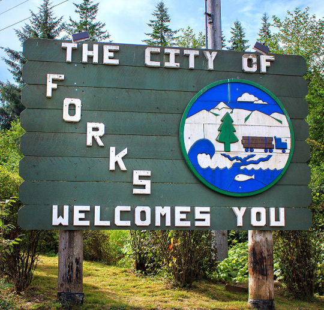

Cercada por florestas, praias e paisagens naturais, Forks é um destino perfeito para quem gosta de tranquilidade e contato com a natureza. Explore os principais pontos da cidade, conheça suas paisagens e encontre lugares incríveis para aproveitar cada momento da viagem.
Turismo
Florestas densas, trilhas e paisagens verdes fazem de Forks um destino perfeito para quem ama a natureza.
Cercada por áreas preservadas, a região oferece cenários tranquilos para caminhar, respirar ar puro e apreciar a beleza do noroeste de Washington.
Descubra praias cercadas por montanhas, árvores e formações rochosas que tornam a região única.
As paisagens costeiras são ideais para uma pausa tranquila, com o som das ondas e vistas que rendem momentos inesquecíveis.
Caminhe por trilhas, explore parques e aproveite experiências incríveis em meio às paisagens de Washington.
Há opções para diferentes estilos de passeio, desde caminhadas leves até explorações mais longas em meio às florestas da região.